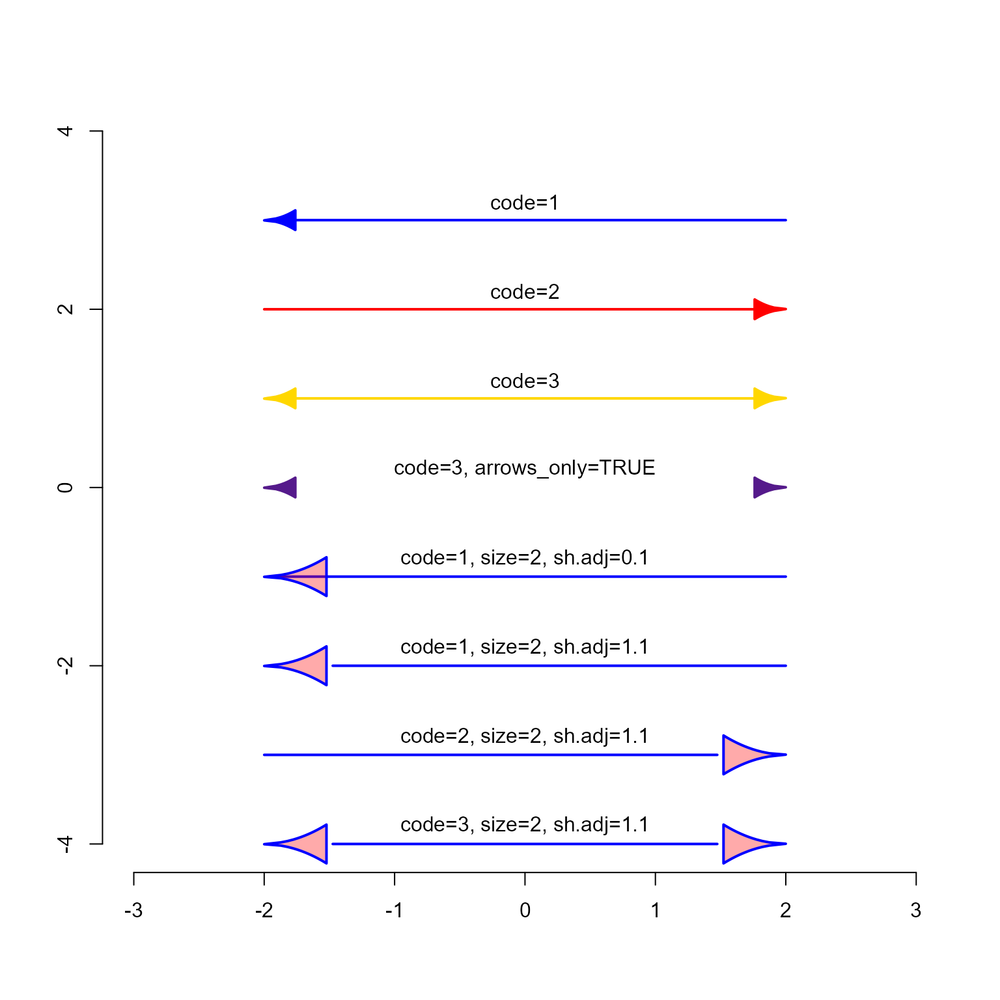

Render igraph arrows
Arguments
- x1, y1, x2, y2
numericcoordinates for initial and final x and y coordinates.- code
integerindicating the position of arrow:code=1arrow is positioned on the line endcode=2arrow is positioned on the line startcode=3arrow is positioned on both ends of the line
- size
numericscaled size of the arrow head, which is applied to both the length and width of the arrow head.- width
numericscalar for the arrow head width, which is only applied to the relative arrow width.- open
logicalindicating whether the arrow head should be a filled polygon, otherwise only the outer "V" lines are drawn.- sh.adj
numericadjustment for segment length, where:sh.adj=0will extend the edge line (underneath the arrow head) to the end of the linesh.adj=1will extend the edge line only to the base of the arrow headsh.adj=1.1will leave a gap approximately 10% the arrow head length, between the edge line and the start of the arrow head.
- sh.lwd
numericline width of main segment edge line- sh.col
charactercolor of main segment edge line- sh.lty
numericline type of main segment edge line- h.col, h.col.bo
characterarrow head color and arrow head border color, respectively.- h.lwd
numericarrow head line width- h.lty
numericarrow head line type- arrows_only
logicalindicating whether to draw only arrows, orarrows_only=FALSEto draw arrows and edge lines.- curved
logicalindicating whether to draw curved edges- verbose
logicalindicating whether to print verbose output.
Details
This function is a mimic of the internal igraph:::igraph.Arrows()
which is not permitted to be called directly for CRAN-approved
R packages.
See also
Other jam igraph internal functions:
default_igraph_values(),
get_igraph_arrow_mode(),
jam_plot_igraph()
Examples
plot(NULL, xlim=c(-3, 3), ylim=c(-4, 4), type="n", xlab="", ylab="", bty="n")
jam_igraph_arrows(-2, 3, 2, 3, code=1, open=FALSE, sh.col="blue", sh.lwd=2)
#> $lab.x
#> [1] -0.6666667
#>
#> $lab.y
#> [1] 3
#>
jam_igraph_arrows(-2, 2, 2, 2, code=2, open=FALSE, sh.col="red", sh.lwd=2)
#> $lab.x
#> [1] -0.6666667
#>
#> $lab.y
#> [1] 2
#>
jam_igraph_arrows(-2, 1, 2, 1, code=3, open=FALSE, sh.col="gold", sh.lwd=2)
#> $lab.x
#> [1] -0.6666667
#>
#> $lab.y
#> [1] 1
#>
jam_igraph_arrows(-2, 0, 2, 0, code=3, arrows_only=TRUE, open=FALSE, sh.col="purple4", sh.lwd=2)
#> $lab.x
#> [1] -0.6666667
#>
#> $lab.y
#> [1] 3.265617e-16
#>
jam_igraph_arrows(-2, -1, 2, -1, code=1, open=FALSE, sh.col="blue", h.col="#FF000055", sh.lwd=2, size=2, sh.adj=0.1)
#> $lab.x
#> [1] -0.6666667
#>
#> $lab.y
#> [1] -1
#>
jam_igraph_arrows(-2, -2, 2, -2, code=1, open=FALSE, sh.col="blue", h.col="#FF000055", sh.lwd=2, size=2, sh.adj=1.1)
#> $lab.x
#> [1] -0.6666667
#>
#> $lab.y
#> [1] -2
#>
jam_igraph_arrows(-2, -3, 2, -3, code=2, open=FALSE, sh.col="blue", h.col="#FF000055", sh.lwd=2, size=2, sh.adj=1.1)
#> $lab.x
#> [1] -0.6666667
#>
#> $lab.y
#> [1] -3
#>
jam_igraph_arrows(-2, -4, 2, -4, code=3, open=FALSE, sh.col="blue", h.col="#FF000055", sh.lwd=2, size=2, sh.adj=1.1)
#> $lab.x
#> [1] -0.6666667
#>
#> $lab.y
#> [1] -4
#>
text(x=rep(0, 8), y=seq(from=3, to=-4)+0.2,
labels=c("code=1",
"code=2",
"code=3",
"code=3, arrows_only=TRUE",
"code=1, size=2, sh.adj=0.1",
"code=1, size=2, sh.adj=1.1",
"code=2, size=2, sh.adj=1.1",
"code=3, size=2, sh.adj=1.1"))
